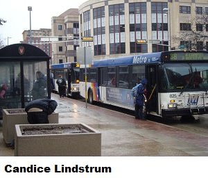

The conundrum seems simple enough: Neither Metro nor UW-Madison can live without the other, BUT neither is happy with
a partnership that cannot function well without a regional transport authority. Until there is one in the Madison area, the
relationship may need to change dramatically from what it has been in the recent past, because Metro should pay more attention to
non-UW needs.
Despite its name change to Metro Transit from Madison Metro, Metro is owned and operated by the city of Madison. City property taxes, and to a much less extent those of Fitchburg and Middleton, help fund the system in a major way. In contrast, the UW’s Madison campus is a regional entity, contributing only minimally to the city financially for services such as fire protection, not for transportation. For instance, according to a 2010 UW survey, while 96 percent of UW students and 71 percent of UW faculty and staff live less than 10 miles from campus, less than half (46 percent) of UW hospital
workers do. Regardless of their residency, many use an unlimited ride bus pass.
Other organizations have pass programs too of course, but I focus on the UW here because of its size (over 42,000 students, 17,000 employees and 2000 faculty in 2010), its excellent data, and its special governmental status.
At one time, the UW’s and other unlimited ride bus pass programs were a major boon to Metro because they provided Metro with additional rides on buses that were operating anyway, often at a very low capacity. They were a boon to the UW’s Associated Students of Madison, because they helped spread the cost of bus use by students who were largely barred from parking cars on campus, lived in Madison, and thus contributed toward the property taxes that helped support the city agency (even if indirectly through rent) but lived far enough away to need a ride to get to campus. They were a boon to the UW’s Transportation Services, because bus use reduced demand for car parking. The UW had decided to cap its car parking capacity at 13,000 stalls on its Madison campus in order to maximize land use, not an easy task given its size (the city manages 2,500 stalls downtown in comparison). So what if passenger revenue only covered 16-24 percent of the cost of a ride? Rides provided additional revenue for what were fixed costs anyway.
But times have changed although we do not yet have a regional transport authority. As the summary of the new 2013-
2107 Transit Development Plan states: Metro Transit’s ridership increased 30 percent between 2005 and 2011, while annual service hours increased only 5 percent from 364,500 to 383,100. This ridership increase is a positive development; however, overloading and crowded buses have become a problem during peak periods and occasionally at other times. Metro’s bus storage and maintenance facility on East Washington Avenue has reached its capacity and expanding the bus fleet to provide additional service is impossible without expanding storage space. .... Funding is a major challenge, given the lack of a dedicated funding source for transit, reduced state operating assistance, reduced federal capital funding, and tight local budgets.
In proposing service changes that would begin in August, Metro writes: First, loads have become so large that the schedule
must be supplemented with extra buses 16 times per day — a statement that ignores trips that should be supplemented, or ‘doubled,’ but are not because we do not have enough buses to do so.
Is Metro continuing to benefit from a relationship that requires it to add extra buses that cost more (or threaten to cost more) to operate than the revenue it receives from doing so? Not that Metro is not increasing its charge for a bus ride, most recently by 9 percent.
While UW students overall seem to consider the increased expense of bus passes tolerable (so far, although not without dissent), the UW’s Transportation Services, responsible for faculty and staff passes, seems less convinced. In widely-held forums in 2010, the opening presentation observed that transit expenses were increasing faster than its revenues could support. Last year, it cut its contribution to the campus bus, thereby forcing the elimination of route 85 and cutting route 81’s late night runs by half. Next year, it will start charging for the bus pass. And, we are told, we are only seeing the beginning of major changes to the bus program. It was not long ago when the UW had no bus pass nor helped support the campus shuttle. It is far from delusional to speculate that that situation may not be far off again although the students may decide something else.
In the meantime, in its single-minded chase after increasing ridership without regard to the financial implications of doing so, or of its duty to other bus users in the area, Metro is proposing service changes that will continue to facilitate bus use by UW affiliates at the expense of everyone else. It is proposing eliminating runs, cutting routes, and redirecting other routes away from housing occupied by senior citizens or disabled individuals. It has a history of being tone deaf and treating captive clientele poorly. Can that change?
 Madison Area Bus Advocates
Madison Area Bus Advocates